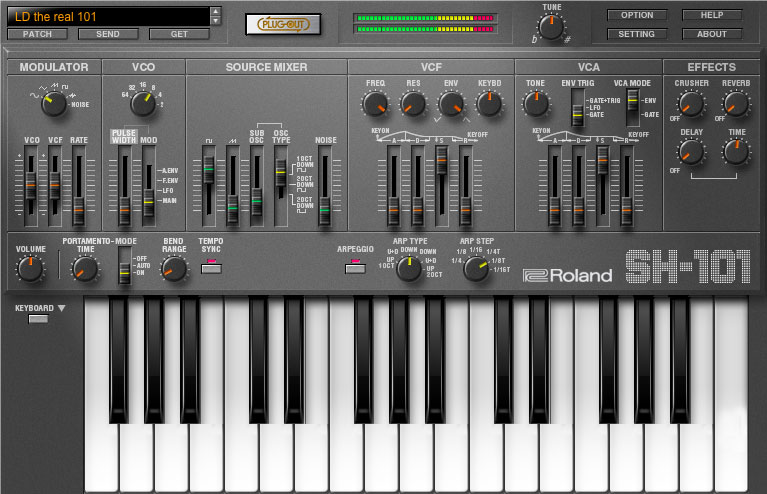

Sequence Synths
About
Synths
Drum Machines
Make Music
Synthesizers
Mini-Moog Model D clone
Probably the most famous synth in history and has a discography to match, this monosynth is legendary for its fat, warm basses and leads powered by its three VCOs and 12db/octave filter.More info
-Buy Here-

System-100 Clone
It is a modern reproduction of the now-legendary semi-modular monosynth from 1975. It integrates the features of the original Model 101 Synthesizer and Model 102 Expander units, resulting in an incredibly fat and uniquely versatile two oscillator monosynth.More Info
-Buy Here-

More info
-Buy Here-
SH-101 Clone
It is a monophonic synthesizer launched by Roland in 1982. the SH-101 quickly became popular for its characteristic tone and simple one-VCO › one-VCF › one-VCA › one-LFO structure.More info
-Buy Here-

CS-80 Clone
Huge in size and price tag, the CS-80 was a flagship synthesizer of the 1970's. It's unique dual voice layout allowed for rich and full sounds that have not been matched to this day.More info
-Buy Here-